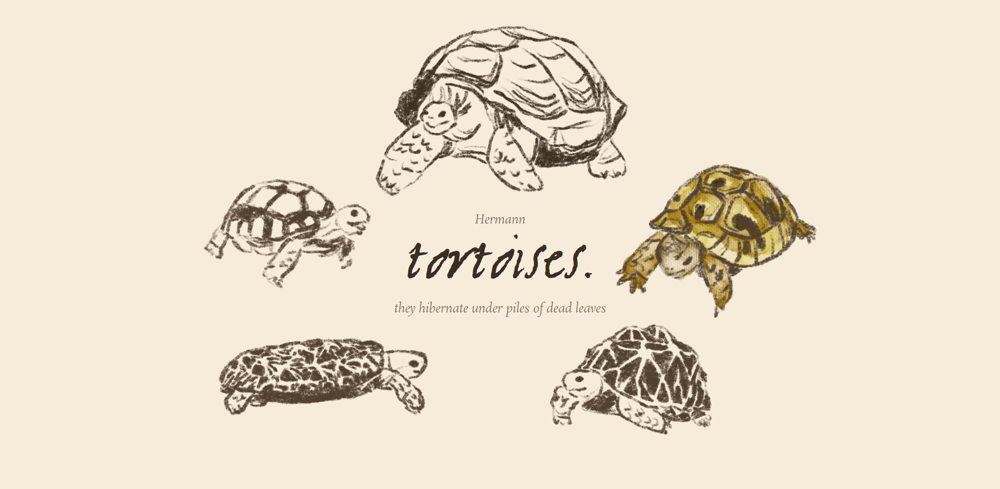
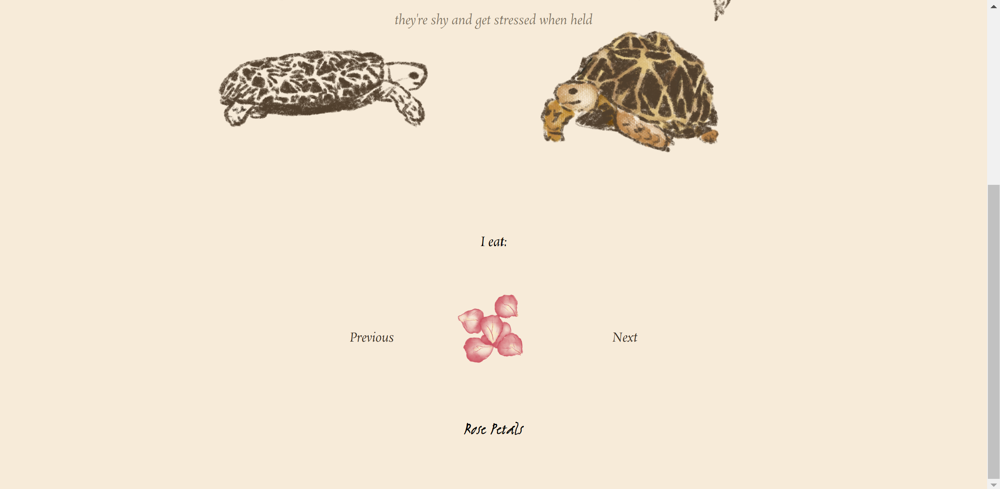
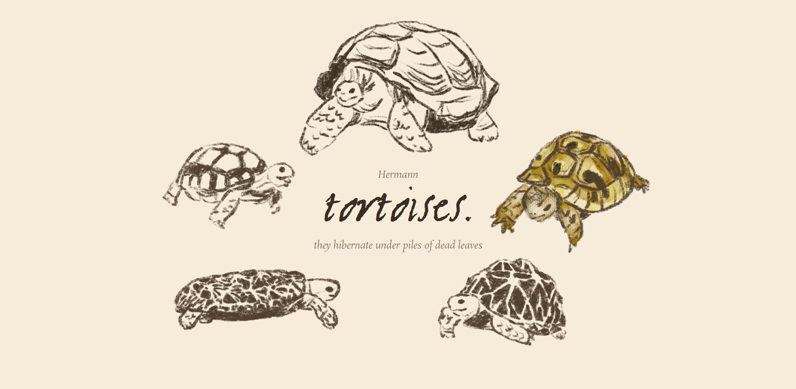
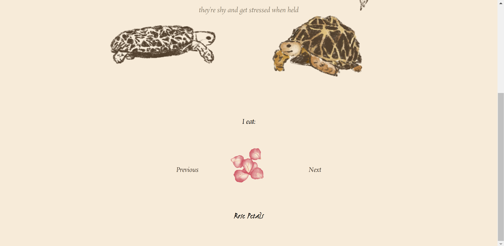
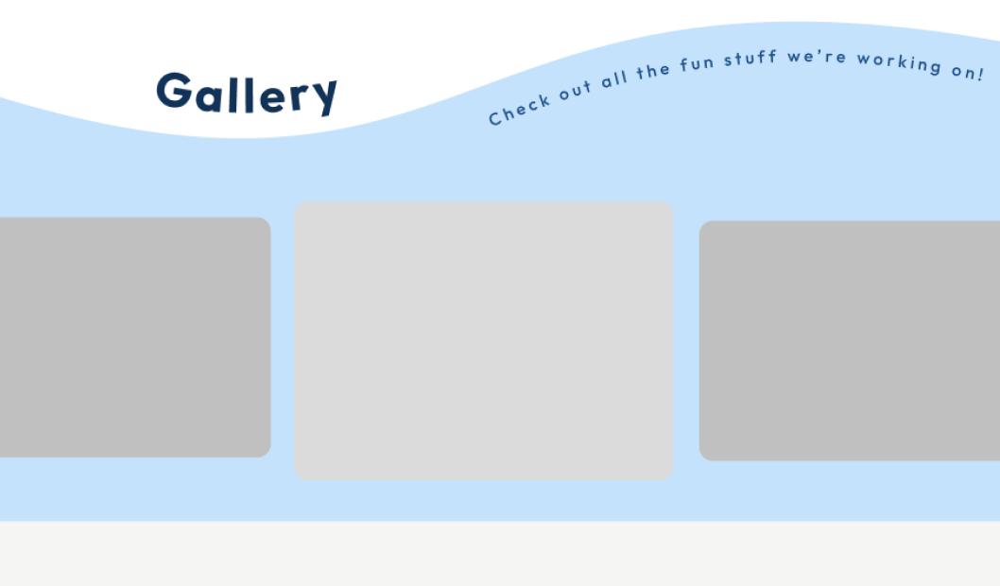
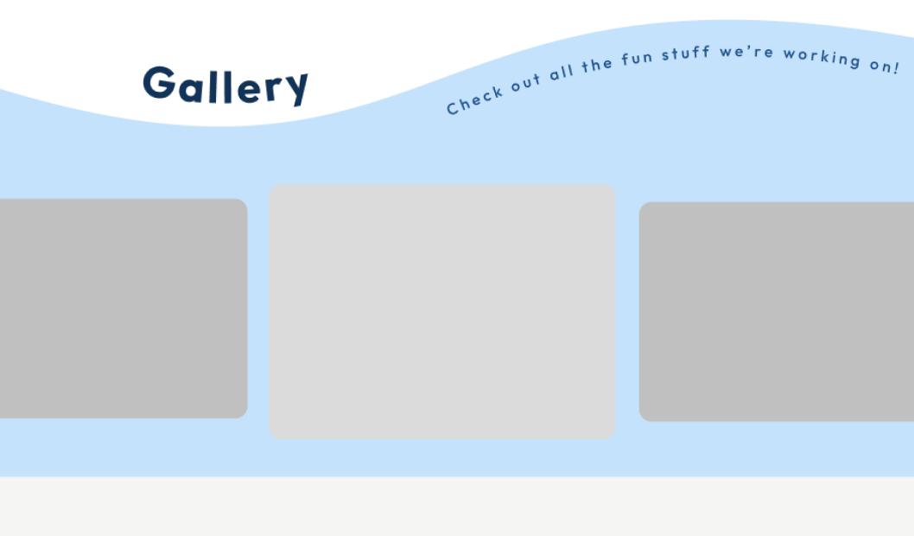

Data Science & SWE Projects
Explore some of my favorite projects showcasing my technical skills and creativity. Take me back to see other experiences!
Cyberbullying Detection
Developed an NLP model to detect cyberbullying in social media text, analyzing features that contributed to cyberbullying flags, such as language.
Predicting Student Performance
Built a model using k-nearest neighbors regression with in order to predict student performance based on various factors, such as sleep hours and previous hours studied.
Spam or Ham?
Designed a logistic regression model to predict whether incoming emails are spam or "ham" (non-spam). Achieved a classifier with 85%+ accuracy through feature engineering and principal component analysis.
Friendsgiving
Developed a simple, 2D pixel game from scratch using Java. The goal of the game is to 'talk' to all your animal friends and collect their favorite foods from their home island. Loosely inspired by the popular Nintendo game, Animal Crossing. Used various data structures and algorithms along with OOP to develop the application. I also designed all the visual aspects.
 



tortoises.
Built a small educational website that displays different types of tortoises and three plants in their diet.
 

BearMatch
The original iteration of another project, BearPlanner. This site aimed to match students based on schedule similarity and common interests. I developed most of the frontend for this project before it was converted to BearPlanner, where I used MongoDB and other backend tools to develop a schedule generator based on inputs.